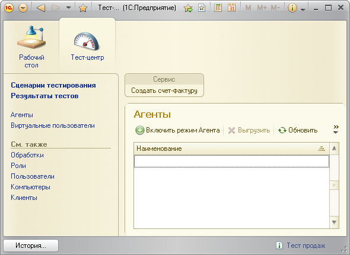
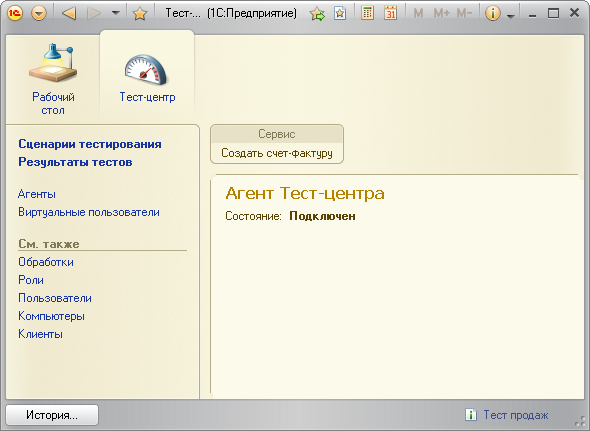

Для того, чтобы Тест-центр смог запустить виртуальных пользователей на заданных компьютерах, необходимо запустить на них Агентов Тест-центра. Запуск Агентов осуществляется вручную.
Необходимо запустить Тест-центр на каждом компьютере, который будет использоваться для тестирования, открыть список Агентов и нажать кнопку «Включить режим Агента».

Тест-центр перейдет в состояние «Агент».
